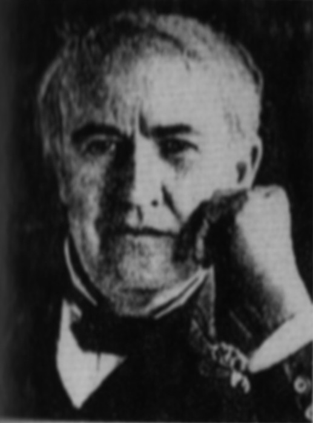
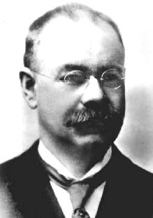

Edison, Thomas Alva

Hollerith, Hermann

Asimov, Isaac

Ez a leggyorsabb és egyben legdrágább számítógéptípus. A szuperszámítógépek olyan egyedileg épített célszámítógépek, amelyeket egy adott, általában nagy számításigényű program lehető leggyorsabb végrehajtására használnak. Ilyen gépeket használnak például időjárás-előrejelzések készítéséhez, nukleáris robbantások szimulálásához, illetve mozifilmek csúcsminőségű animációnak, effektjeinek elkészítéséhez. A teljesítmény értékelése idővel változik, pl. a legtöbb egykori szuperszámítógép mára egy közép- vagy alsó kategóriás gép teljesítményét nyújtja. A szuperszámítógépeket 1993 óta a TOP500 projekt keretében rangsorolják.